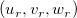
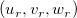
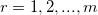
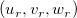
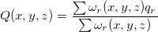
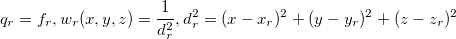

/math-b4e35eef3ae3292feb4420e83cc8f918.png "(x_r,y_r,z_r,f_r)\!") の 散布データポイントを補間するスムージング関数
の 散布データポイントを補間するスムージング関数 /math-2fbb8214a6a743e8ec1c80a1df1a3f4b.png "Q(x,y,z)\!") を作成します。そして、偏微分して選択したポイント  ので補間を評価します。曲面は連続的で、連続した一次導関数を持ちます。
を作成します。そして、偏微分して選択したポイント  ので補間を評価します。曲面は連続的で、連続した一次導関数を持ちます。
内容 |
この機能は1セットのXYZ散布図に伴う値(ベクター型、従属変数)の列の3D補間を実行します。
この関数を使用するには、
| 再計算 |
分析結果の再計算を制御します。
詳細は、以下をご覧下さい。分析結果の再計算 |
|---|---|
| 入力 |
入力データ範囲を指定します。
範囲制御についてはこちらを確認してください：入力データを指定する |
| 計算制御 |
補間されるポイントのパラメータを指定します。
|
| 出力 |
補間したデータに対する結果を出力します。 |
この機能は、修正Shepard法を使用して  に対する の 散布データポイントを補間するスムージング関数 を作成します。そして、偏微分して選択したポイント  ので補間を評価します。曲面は連続的で、連続した一次導関数を持ちます。

ここで

詳細なアルゴリズムはNAG関数のヘルプドキュメントを参照してください。
詳細なアルゴリズムはNAG関数のヘルプドキュメントを参照してください。